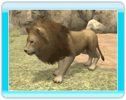
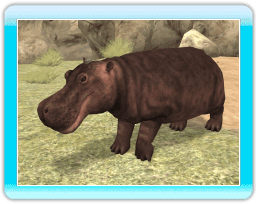
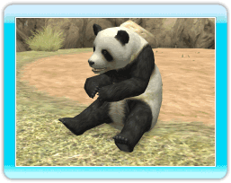

18 |
Présentation des animaux |
 |
|

●Lion asiatique On trouve cet animal carnivore dans les forêts. Il se déplace généralement en petites troupes, mais il chasse seul. ●Zèbre de Grévy Cet herbivore aux rayures uniques en leur genre vit dans la savane ou dans les régions semi-désertiques. Lorsqu'il est éveillé, il passe le plus clair de son temps à manger.  ●Hippopotame On trouve principalement cet énorme herbivore dans le sud de l'Afrique. Il passe le plus clair de son temps dans l'eau, et est capable de rester sous l'eau pendant près de 5 minutes.  ●Panda géant Cet herbivore bien connu a son habitat dans les bois de bambous, dont il mâche les feuilles à longueur de journée.  ●Éléphant d'Afrique Cet herbivore imposant vit dans la savane ou dans les forêts. Il se baigne souvent pour empêcher sa peau de sécher sous le soleil brûlant.  ●Tatou à 3 bandes Ce minuscule omnivore se plaît dans la forêt et la savane. Il ne fait que 20 cm de long et se roule en boule pour se protéger contre les prédateurs.  ●Ours noir On trouve cet omnivore principalement dans les forêts. Il est particulièrement habile pour grimper aux arbres.  ●Tapir de Malaisie Cet herbivore vit généralement dans les forêts à proximité de plans d'eau, et il se déplace seul ou en couple. |
 |
 |